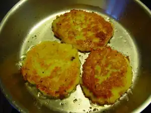
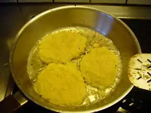

Kartoffelpuffer
| Kartoffelpuffer | |
|---|---|
 | |
| Zutatenmenge für: | 4 Personen |
| Zeitbedarf: | 45 Minuten |
| Hinweise: | |
| Schwierigkeitsgrad: | |
Kartoffelpuffer oder Reibekuchen sind ein Pfannengericht aus geriebenen Kartoffeln und weiteren Zutaten wie Eiern und Zwiebeln.
Kartoffelpuffer sind ein traditionelles Gericht der deutschen, böhmischen und österreichischen Küche. Auch in einigen osteuropäischen Ländern ist das Gericht verbreitet. Dem Kartoffelpuffer ähnlich sind die Schweizer Rösti, die allerdings ohne Mehl und Ei zubereitet werden.
Synonyme
- Deutsch: Baggers, Bambis, Dätscher, Dotsch, Erdäpfelkuchen, Fratzen, Hatscheln, Kartoffelpfannkuchen, Klitscher, Kröbbelche, Krumbeer Schnittchen, Krumbeer Küchelscher, Latkes, Pickat, Pratsch, Pratschen, Pratschlüpfls, Quaddelpratschen, Reibekuchen, Reibeplätzchen, Reiberdatschi, Rievkooche (Kölsch), Ritsche, Schepperlinge,
- Englisch: Potato pancake
- Französisch: Galettes de pommes de terre
- Italienisch: Tortel di patate
- Spanisch: Kartoffelpuffer (!)
- Portugiesisch: Reibekuchen (!)
- Slowakisch: Zemiakové placky
Zutaten
- 1 kg geschälte Kartoffeln
- 1 Zwiebel (optional)
- 2–3 Eier (je nach Größe der Eier)
- 1 EL Kartoffelstärke (optional)
- Erdnussöl, Sonnenblumenöl, Butterschmalz oder Margarine
- 1 Prise frisch geriebene Muskatnuss (optional)
- frisch gemahlener, weißer oder schwarzer Pfeffer (optional)
- 1 Prise Salz
Kochgeschirr
- 1 beschichtete Pfanne, oder eine gut eingebrannte Gusseisenpfanne
- 1 Sparschäler
- 1 Küchenreibe
- 1 Schüssel
- 1 Geschirr- oder Baumwolltuch
- Küchenpapier
Zubereitung

- Kartoffeln waschen, schälen, reiben und in eine Schüssel geben. Es sollte mit einer möglichst feinen Reibe gearbeitet werden, sodass die Masse eine breiartige Konsistenz annimmt.
- Man kann die geriebenen Kartoffeln in ein Küchenhandtuch geben und gut auswringen. Dann erhält man trockene, aber relativ geschmacklose Kartoffelpuffer. Belässt man die natürliche Flüssigkeit der Kartoffel in der geriebenen Masse, erhält man aromatischere Puffer. Wichtig ist auf jeden Fall rasches Arbeiten, damit die Masse in die Pfanne kommt, bevor sie sich bräunlich verfärbt, was ebenfalls dem Geschmack abträglich ist.
- Geriebene Zwiebel (optional) und Eier zugeben und würzen.
- Die Puffer auf mittlerer Temperatur in einer Pfanne ausbacken.
- Auf Küchenpapier abtropfen lassen, um die Fettmenge zu reduzieren. Kann nicht sofort serviert werden, empfiehlt sich das Warmhalten im Backofen.
- Auf keinen Fall zugedeckt lagern, weil sie durch den Dampf weich werden und dann nicht mehr kross sind.
Anmerkungen
- Je feiner die Reibe, desto mehr Wasser zieht die Kartoffel, sodass bei sehr fein geriebenen Kartoffeln Wasser teilweise abgegossen werden muss.
- Sollte bei dieser Operation Kartoffelstärke verloren gehen, diesen Verlust durch ein Fertigprodukt aus dem Handel ausgleichen.
- Tipp: Sollte der Kartoffelteig zu viel Wasser gezogen haben, kann man dem Teig Haferflocken hinzufügen. Diese binden die Flüssigkeit ohne den Geschmack zu verfälschen.
- Ob Mehl oder Haferflocken verwendet werden sollen, ist letztlich (regionale) Ansichtssache.
Beilagen
Je nach Art der Beilagen können Kartoffelpuffer "veredelt" werden. Das Spektrum reicht von einem einfachen derben Essen bis zu einem raffinierten Mahl.
- Apfelmus oder Zuckerrübensirup
- Endiviensalat, Feldsalat oder gemischter Salat
- Kräuterquark
- Zimt und Zucker
- Geräucherte Forelle oder Lachs mit Apfelkren oder Meerrettichsahne
- Ketchup oder Remouladensauce oder ein Fertigprodukt aus dem Handel (Achtung: Kalorienbombe)
- Sauerkraut mit Speck
- Mit Kürbiskernmus, Frischkäse und Birnenstiftchen garnieren
- Mit geräuchertem Lachs belegen. Darauf ein Salatblatt, einige bunte Paprikastreifen, Tomatenscheibe(n) und Zwiebelringe. Mit einem weiteren Kartoffelpuffer abdecken. Dazu reichlich Frankfurter grüne Sauce. Wird auch "Friesischer Doppeldecker" genannt.
- Auf gebuttertem Schwarzbrot oder Pumpernickel mit Apfel- oder Rübenkraut servieren: Das ist die rheinisch-westfälische Variante.
Varianten
- Mit Chilipfeffer oder fein gewiegter Chilischote die Masse aufpeppen.
- Haferflocken anstelle der Kartoffelstärke verwenden, auf diese Weise bindet die austretende Flüssigkeit besser ab. Die Puffer werden (und bleiben!) knuspriger.
- Mit Kaviar (Typ Stör, Forelle, Saibling oder Lachs).
- Mit ein wenig geriebenem Knoblauch bestreuen (aus Tschechien, schmeckt sehr gut).
- Mit Schmand oder Sauerrahm und Pfeffer sowie Salz.
- Niederrheinische Art umfasst zusätzlich Zwiebel und Ei, wird mit Zuckerrübensirup (Rübenkraut) bestrichen.
- „Italienische Variante“: je zur Hälfte Kartoffeln und Möhren grob raspeln, zusätzlich einige Kartoffeln fein reiben wegen der Kartoffelstärke als Bindemittel, ein Ei, Salz, etwas groben Pfeffer und ein bis zwei Knoblauchzehen hinzufügen (dafür Zwiebel und Muskatnuss weglassen, kein Mehl als Bindemittel verwenden!); in reichlich Olivenöl backen.
- Zu dem Kartoffelteig eine Pellkartoffel hinzureiben, das verstärkt die Bindung.
- Frische Petersilie in der Kartoffelmasse verleiht auch eine ausgezeichnete Geschmacksnote.
- Einen Teil der Kartoffeln kann man durch Möhren ersetzen. Einfach mit den Kartoffeln zusammen reiben.
- 4 gehäufte EL Mehl pro kg Kartoffeln (evtl. ein Ei zusätzlich) sorgen für gleichmäßigere Reibekuchen. Noch ein wenig Backpulver macht die Reibekuchen luftiger.
- Mit frischen Blaubeeren.
Sächsische Varianten
- Im Vogtland isst man Bambes auch sehr gern zu allen rustikalen Fleischgerichten, egal ob Wild, Rind, Schwein - ganz besonders auch zu Hammel- bzw. Lammbraten. Als Gemüse schmeckt dazu besonders gut ein Apfelrotkraut oder aber Speckbohnen. Und hat man frische Waldpilze, ist das Glück vollkommen! In der vogtländischen Variante 1/4 l Buttermilch. Sie ersetzt das Kartoffelwasser nach dem Ausdrücken und sorgt für einen kräftigen Geschmack.
- Die Varianten aus dem Westerzgebirge sind unter den Namen Getzen, Fratzen, Klitscher, Buttermilchgetzen, Kließkuung und Rauchemaad bekannt.
Resteverwertung
- Kartoffelpuffer sind sehr gut tiefkühlgeeignet. Zum Verzehr sollten sie in der Mikrowelle oder im Backofen aufgewärmt werden.
- Kartoffelpuffer schmecken auch kalt auf Brot (im Rheinland mit Rübenkraut beschmiert). Es kann also nicht schaden, ein paar mehr zu machen. Es sollten reichlich viele sein, denn frische Puffer finden immer wieder Abnehmer.